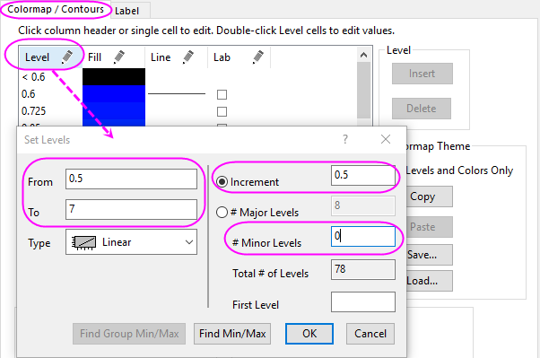

Linien- und Konturdiagramme kombinieren
Combine-Line-Contour
Zusammenfassung
Dieses Tutorial zeigt Ihnen, wie Sie durch Kombinieren von Liniendiagramm und Konturdiagramm eine Weltkarte erstellen.
Was Sie lernen werden
- Ein Konturdiagramm erstellen
- Ein Liniendiagramm mit einem Konturdiagramm in einem Diagrammlayer kombinieren
- Ein Konturdiagramm benutzerdefiniert anpassen
Schritte
Dieses Tutorial basiert auf dem Projekt: <Origin-Verzeichnis>\Samples\Tutorial Data.opj.
- Öffnen Sie Tutorial Data.opj und navigieren Sie zu dem Ordner Map Combining Line and Contour Plots im Projekt Explorer.
- Aktivieren Sie die Matrix MBook1A und markieren Sie die gesamte Matrix. Wählen Sie Zeichnen: Kontur: Kontur - Farbabbildung, um ein Konturdiagramm zu erstellen.
- In diesem Schritt wird ein Liniendiagramm zu dem Konturdiagramm hinzugefügt. Wählen Sie Grafik: Layerinhalt, um den Dialog zu öffnen. Wählen Sie in der Auswahlliste Verfügbare Daten oben rechts die Option Arbeitsblätter im Ordner. Markieren Sie die Spalte B(Y) von Book5 im linken Bedienfeld, wählen Sie den Diagrammtyp Liniendiagramm und fügen Sie sie zum rechten Bedienfeld hinzu. Klicken Sie dann auf die Schaltfläche OK. Löschen Sie die Legende für das hinzugefügte Liniendiagramm.
- Bitte beachten Sie, dass Sie die Arbeitsblattdaten per Drag&Drop in das Konturdiagramm ziehen können und das in Form eines hinzugefügten Liniendiagramms.
- Im Folgenden wird das Diagramm benutzerdefiniert angepasst. Wählen Sie Format: Layer, um den Dialog Details Zeichnung zu öffnen. Wechseln Sie zur Registerkarte Anzeige und Performance und deaktivieren Sie die zwei Kontrollkästchen in der Gruppe Entwurfsmodus - Punkte wenn nötig übergehen. Gehen Sie zur Registerkarte Größe, aktivieren Sie das Kontrollkästchen Achsenlänge mit Skalierung mit Verhältnis X:Y verknüpfen und belassen Sie seinen Wert bei 1. Setzen Sie die Breite dann auf 80.
- Erweitern Sie den Zweig Layer1 und wählen Sie das Konturdiagramm im linken Bedienfeld des Dialogs Details Zeichnung aus. Führen Sie anschließend folgende Schritte aus:
- Wechseln Sie zur Registerkarte Farbplatte/Kontur und klicken Sie auf die Überschrift Ebene, um den Dialog Ebenen festlegen zu öffnen. Legen Sie die Optionen des Dialogs, wie im folgenden Bild zu sehen, fest.
- 
- Klicken Sie auf OK, um den Dialog zu schließen. Klicken Sie auf die Überschrift Füllung, um den Dialog Füllung zu öffnen, und wählen Sie die Option Farben zu Mischung hinzufügen. Setzen Sie dann Von auf Orange und Bis auf Marineblau.
- Klicken Sie auf OK, um den Dialog zu schließen. Klicken Sie auf die Zelle in der Spalte Füllung und auf die Zeile <0,5, um die Füllfarbe auf Rot zu setzen.
- Klicken Sie auf OK, um den Dialog zu schließen. Klicken Sie auf die Zelle in der Spalte Füllung und auf die Zeile >7 , um die Füllfarbe auf Schwarz zu setzen.
- Klicken Sie auf OK, um den Dialog zu schließen. Klicken Sie auf die Überschrift Linien, um den Dialog Konturlinien zu öffnen, deaktivieren Sie das Kontrollkästchen Nur auf Hauptebenen zeigen und wählen Sie dann die Option Alle verbergen.
- Klicken Sie auf OK, um den Dialog zu schließen. Klicken Sie auf das Feld Farbe in der Gruppe Fehlender Wert und setzen Sie die Füllfarbe auf Weiß. Klicken Sie auf OK.
- Wechseln Sie zur Registerkarte Beschriftung, wählen Sie die Option Dezimalstellen und behalten Sie den Standardwert 1 bei.
- Klicken Sie auf die Schaltfläche OK, um die Einstellungen für das Diagramm zu übernehmen. Wählen Sie im Menü Grafik: Seite an Layer anpassen, um den Dialog Seite an Layer anpassen zu öffnen. Übernehmen Sie die Standardeinstellungen und klicken Sie auf die Schaltfläche OK. Das Diagramm sollte folgendermaßen aussehen:

- Klicken Sie doppelt auf die Farbskala, um den Dialog Eigenschaften Farbskala zu öffnen und gehen Sie zur Seite Layout. Legen Sie folgende Einstellungen fest:

- Wechseln Sie dann zur Seite Ebenen und legen Sie die Einstellungen, wie unten zu sehen, fest:
- Verändern Sie die Größe der Farbskala und positionieren Sie sie neu. Modifizieren Sie die Beschriftungen der Hilfsstriche und die Titel der X- und Y-Achse und fügen Sie Diagrammtitel hinzu, wie im untenstehenden Bild zu sehen. Das Diagramm sollte folgendermaßen aussehen: